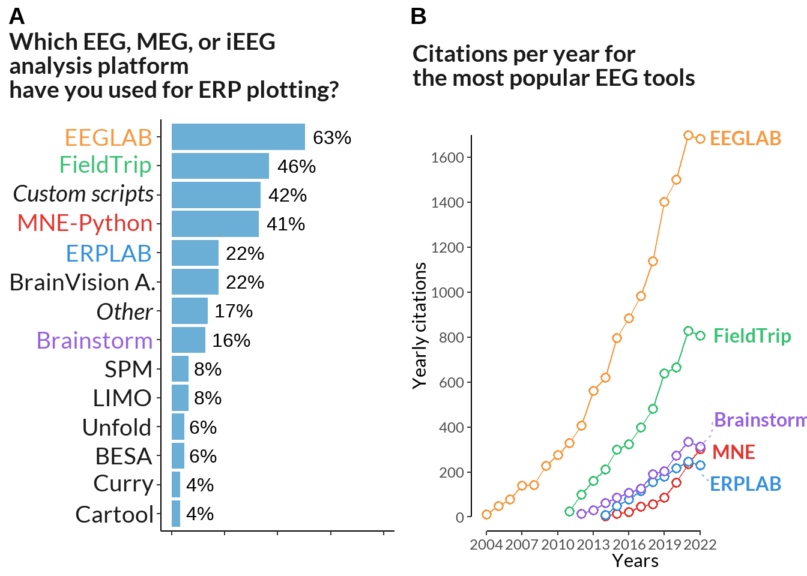

tools <-rev(c("EEGLAB", "FieldTrip", expression(italic("Custom scripts")), "MNE-Python", "ERPLAB", "BrainVision A.",expression(italic("Other")), "Brainstorm", "SPM", "LIMO", "Unfold", "BESA", "Curry", "Cartool"))chart <-data.frame(rowSums(t(software))) %>% tibble::rownames_to_column(., "soft") %>%rename_at(vars(colnames(.)), ~c("soft", "sum_scores")) %>%filter(sum_scores !=0) %>%mutate(soft =ifelse(sum_scores >8, as.character(soft), "Other")) %>%group_by(soft) %>% dplyr::summarise(sum_scores =sum(sum_scores)) %>%ungroup() %>%mutate(percent_score =round(sum_scores /nrow(software) *100)) %>%mutate(soft =factor(soft, levels = soft[rev(order(sum_scores))])) %>%ggplot(data = ., aes(y =reorder(soft, percent_score), x= percent_score)) +geom_bar(stat="identity", fill ="#6BAED6") +labs(x="",title="Which EEG, MEG, or iEEG analysis platform\nhave you used for ERP plotting?") +geom_text(aes(label =paste0(percent_score, "%")), hjust =-0.2, size =4) +theme_classic() +theme(axis.text.y =element_text(size =14),legend.position="none", plot.caption.position ="plot", plot.caption =element_text(hjust=0), text =element_text(family ="Lato"),axis.text.x =element_blank(), axis.text =element_text(size =10), plot.title =element_text(color ="grey10", size =16, face ="bold"),axis.title.y =element_blank(),#axis.title.x = element_blank(),plot.title.position ="plot" ) +xlim(0, 100) +scale_y_discrete(labels = tools)cbPalette <-rev(c("#e3342f", "#38c172", "#3490dc", "#f6993f","#9561e2"))cit_plot <- cit_data %>%filter(year <2023) %>%group_by(year) %>%mutate(ylast =case_when(year ==2022~ citations, TRUE~NA)) %>%ggplot(., aes(x = year, y = citations, color = name, label = name)) +geom_line() +geom_point(shape =21, fill ='white', size=2, stroke=1) +scale_color_manual(values=cbPalette) +theme(legend.position ="none",panel.background =element_blank(), panel.border =element_blank(), strip.background =element_blank(), text =element_text(family ="Lato"),plot.title =element_text(color ="grey10", size =16, face ="bold", margin =margin(t =15)),plot.title.position ="plot",)+scale_x_continuous(expand =c(0, 0),limits =c(2003.8, 2023), breaks =seq(2004, 2023, by =3) ) +labs(title ="Citations per year for the most popular EEG tools", subtitle ="", x ="Years", y ="Yearly citations" ) +geom_rangeframe(color ="black") +scale_y_continuous(expand =c(0.04, 0),breaks =seq(0, 1800, by =200) )+coord_cartesian(xlim =c(2004, 2029), clip ="off") +geom_text_repel(aes(color = name, label = name, x =2022, y = ylast,),family ="Lato",fontface ="bold",size =4,direction ="y",xlim =c(2022.3, NA),hjust =0,segment.size = .7,segment.alpha = .5,segment.linetype ="dotted",box.padding = .4,segment.curvature =-0.1,segment.ncp =3,segment.angle =20 )
Code
cbPalette2 <-c("#f6993f", "#38c172", "grey10", "#e3342f", "#3490dc", "grey10", "grey10", "#9561e2", rep("grey10", 6))f7 <-ggarrange(chart +labs(title="Which EEG, MEG, or iEEG\nanalysis platform\nhave you used for ERP plotting?")+theme( axis.text.y =element_text(color =rev(cbPalette2), face ="bold"),plot.title =element_text(color ="grey10", size =14, margin =margin(t =15))), cit_plot +labs(title ="Citations per year for\nthe most popular EEG tools") +theme(plot.title =element_text(color ="grey10", face ="bold", size =14, margin =margin(t =15)))+scale_x_continuous(limits =c(2003.8, 2023), breaks =seq(2004, 2023, by =3)), labels =c("A", "B"), align ='h')f7

Figure 8
Code
plot_features <-c("Combine with a custom plot created outside of the toolbox (as subplot or inset)","Flexible tweaking of plot attributes (colors, linewidths, margins etc.)","Speed of plotting","Presentation/publication ready figures","Reproducibility of interactively generated or modified plots","Zooming or panning within a plot","Interactive selection of time-ranges or electrodes e.g. via Sliders or Dropdown menus","Generating plots by clicking (GUI)","Generating plots by coding")feature1 <- data[52:60] %>%rename_all(., ~str_split_i(colnames(data[52:60]), "\\? \\[", 2) %>%str_sub(., 1, -2) ) %>%mutate_at(c(colnames(.)), funs(recode(.,"Very important"=2, "Important"=1, "Neutral"=0,"Low importance"=-1, "Not at all important"=-2 ))) %>%pivot_longer(cols =everything(), names_to ="name", values_to ="value") %>%mutate(index =as.integer(factor(name))) %>%filter(!is.na(value))comb_data <- feature1 %>%mutate(name =case_when( name =="Combine with a custom plot created outside of the toolbox (as subplot or inset)"~"Inset", name =="Flexible tweaking of plot attributes (colors, linewidths, margins etc.)"~"Customizable", name =="Speed of plotting"~"Speed", name =="Presentation/publication ready figures"~"Publishable", name =="Reproducibility of interactively generated or modified plots"~"Reproducible", name =="Zooming or panning within a plot"~"Zooming", name =="Interactive selection of time-ranges or electrodes e.g. via Sliders or Dropdown menus"~"Interactive", name =="Generating plots by clicking (GUI)"~"GUI", name =="Generating plots by coding"~"Coding" )) %>%mutate(gr =case_when(grepl("\\b(Speed|Zooming|GUI|Interactive)\\b", name) ==TRUE~"Moderate",grepl("\\b(Coding|Customizable|Reproducible|Publishable|Inset)\\b", name) ==TRUE~"Favored"))test <- comb_data %>%group_by(name, value) %>% dplyr::summarise(n =n()) %>%mutate(gr =case_when(grepl("\\b(Speed|Zooming|GUI|Interactive|Inset)\\b", name) ==TRUE~"Moderate",grepl("\\b(Coding|Customizable|Reproducible|Publishable)\\b", name) ==TRUE~"Favored")) %>%mutate(denymax =case_when(value ==2~ n, TRUE~NA))
Code
cbPalette_fe1 <-c("#e3342f", "#6574cd", "#f6993f", "#38c172" )cbPalette_fe2 <-c("#4dc0b5", "#3490dc","#f1a20b", "#9561e2", "white", "#f66d9b")core <-function(df){ g <-ggplot(data = df, aes(x = value, y = n, label = name, color = name)) +geom_line(bw =0.5, size =1) +geom_point(shape =21, fill ='white', size=2, stroke=1)+labs(x ="Values on the Likert scale", y ="Scores") +geom_rangeframe(color ="black") +theme(panel.background =element_blank(), panel.border =element_blank(), legend.position ="none", text =element_text(family ="Lato"),strip.background =element_blank(), axis.text =element_text(color ="grey40"),axis.ticks =element_line(color ="grey40", size = .5),strip.text =element_text(size =14),axis.title =element_blank(),plot.title =element_text(color ="grey10", size =16, face ="bold", ),plot.title.position ="plot", ) +coord_cartesian(xlim =c(1, 6.5), clip ="off") +geom_text_repel(aes(color = name, label = name, x =5, y = denymax,),family ="Lato",fontface ="bold",size =4,direction ="y",xlim =c(5.5, NA),hjust =0,segment.size = .7,segment.alpha = .5,segment.linetype ="dotted",box.padding = .4,segment.curvature =-0.1,segment.ncp =3,segment.angle =20 ) return(g)} test1 <- test %>%filter(gr =="Favored") %>%mutate(value = value +3) %>%core(.) +scale_x_continuous(expand =c(0.01, 0),limits =c(0.9, 5), breaks =seq(1, 5, by =1) ) +scale_y_continuous(expand =c(0.04, 0),limits =c(0, NA),breaks =seq(0, 150, by =30) ) +scale_color_manual(values = cbPalette_fe1) +theme(axis.text.x=element_blank()) +labs(title ="When using an EEG, MEG, or iEEG visualization tool\nwhich features are important to you?") test2 <- test %>%filter(gr !="Favored") %>%mutate(value = value +3) %>%ungroup() %>% tibble::add_row(name ="void", value =1, n =0, gr ="a", denymax=0) %>%# line above is just to extend yaxis to zerocore(.) +scale_x_continuous(expand =c(0.01, 0),limits =c(0.9, 5), breaks =seq(1, 5, by =1),labels =c("Not important", "", "Neutral", "", "Very important") ) +scale_y_continuous(expand =c(0.04, 0),limits =c(0, NA),breaks =seq(0, 72, by =15) ) +scale_color_manual(values = cbPalette_fe2) +theme(axis.text.x =element_text(color ="black"))figure <-ggarrange(test1, test2, align ='v', nrow =2) require(grid)annotate_figure(figure, left =textGrob("Number of responses", rot =90, vjust =1, gp =gpar(cex =1.3)))